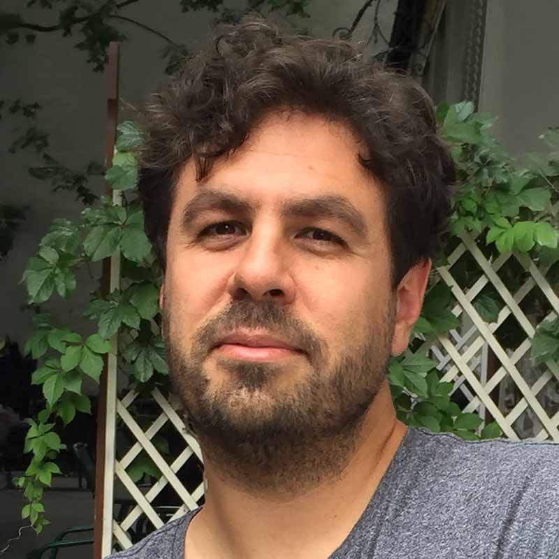

Matthias Függer
Research Director, CNRS

Laboratoire Méthodes Formelles
Université Paris-Saclay · CNRS · ENS Paris-Saclay
Research
My current focus is the systematic engineering of robust microbial systems, with applications in bioproduction, diagnosis, and medical treatment. This work combines experiments, modeling, numerical simulation, AI, and mathematical analysis.
I also study distributed algorithms and digital circuits, including consensus in dynamic networks, timing models, and fault tolerance.
I am co-PI of the Cellular Computing Group and head of the Distributed Computing Group at LMF.
Selected publications
All publications-
Asymptotic Subspace Consensus in Dynamic Networks
5th Symposium on Algorithmic Foundations of Dynamic Networks (SAND 2026) · 2026
-
A quasi-stationary distribution bound for fault analysis in gene regulatory networks
Journal of The Royal Society Interface · 2026
-
MobsPy: A programming language for biochemical reaction networks
PLOS Computational Biology · 2025
-
Phage-mediated intercellular CRISPRi for biocomputation in bacterial consortia
Nucleic Acids Research · 2025
-
An Allee-based distributed algorithm for microbial whole-cell sensors
npj Systems Biology and Applications · 2024
-
Majority consensus thresholds in competitive Lotka–Volterra populations
Proceedings of the 43rd ACM Symposium on Principles of Distributed Computing (PODC) · 2024
-
Tight Bounds for Asymptotic and Approximate Consensus
Journal of the ACM (JACM) · 2021
-
A Faithful Binary Circuit Model
IEEE Transactions on Computer-Aided Design of Integrated Circuits and Systems · 2020
Software
A Python-based language for modeling biochemical reaction networks using meta-species and meta-reactions.
With Fabricio Cravo, Gayathri Prakash, and Thomas Nowak.
Recent courses
All courses- Computational Bioengineering Winter 2025 · With Thomas Nowak.
- Initiation à la recherche Winter 2025 · ENS Paris-Saclay · With Thomas Nowak.
Contact
For research inquiries and opportunities for internships, PhD studies, or postdoctoral research, please contact me.
ENS Paris-Saclay
4 avenue des Sciences
91190 Gif-sur-Yvette, France